Stock Godot 4.7.2 vs FellowEngine
Generated 2026-09-30 14:56 · FellowEngine binary 7f257b56ff · benchmark harness 8bc56a74bd · baseline godot-4.7.2 · A/B fellow-m1
Milestone 1 — result in one paragraph
FellowEngine (Godot 4.7.2-stable + isolated, toggleable changes) was compared with untouched Godot 4.7.2 on four
benchmark scenes at 1920×1080 and 2560×1440, interleaved runs on one laptop (RTX 5070 Ti Laptop, day thermal state).
The first evidence-based experiment rewrote the TAA stage: resolve v2 (reverse-Z closest-depth dilation,
dilated-velocity reprojection, YCoCg variance clip that does not collapse under motion) and history ping-pong
(two fewer full-screen copies). Result: the TAA stage is 3-15 % cheaper than stock in every configuration, whole-frame
time is unchanged within measurement noise, and the image is closer to an accumulated ground truth (2×2 SSAA × 8× MSAA × 8-16 jitters, TAA off) in
4/4 scenes on fixed cameras (LPIPS −19 to −25 %) and in 7 of 8 motion sequences. One measured regression: slightly more
shimmer on alpha-tested grass/fence during a lateral strafe. A GPU shallow-water prototype runs a 512² grid in 0.21 ms
(1024² in 0.75 ms) with no readback.
The four questions
- Does FellowEngine render better than stock Godot? Yes, measurably but modestly, and only in the part that was
changed (temporal anti-aliasing): closer to the ground truth in every scene on fixed cameras and in 7/8 motion
sequences; worse in one (alpha-tested foliage strafe). Everything else renders identically to stock.
- Does it run faster at equivalent quality? Only the TAA stage: 0.04-0.12 ms faster with ping-pong at identical
output (8/8 configurations, GPU timestamps). At whole-frame level this is ≤ ~1-4 % and not statistically resolvable
with 3 runs per configuration. The big costs (directional shadows in Sponza, opaque shading everywhere) are untouched.
- Does it produce better image quality at equivalent performance? Yes: TAA v2 + ping-pong costs no more than stock
TAA (TAA stage 3-15 % cheaper, frame time within noise) and improves SSIM/PSNR/LPIPS against the ground truth.
- Can we prove those claims with reproducible measurements? Yes for the claims above: deterministic frame
sequences, interleaved runs with CV ≤ 3 %, Welch tests, per-pass GPU timestamps, lossless captures, accumulated
ground truth and scripts to regenerate everything (benchmarks/). Limits: one machine, one GPU vendor, a laptop
whose thermal state changed overnight (those runs were discarded, not mixed), and 3-4 runs per configuration.
Summary table (1920x1080, stock vs fellow_v2)
| Scene | Renderer | GPU ms | Render CPU ms | Frame ms | p95 ms | p99 ms | VRAM MB | SSIM vs reference | PSNR vs reference | LPIPS vs reference |
|---|---|---|---|---|---|---|---|---|---|---|
| PBR Validation Lab | Stock | 2.557 | 0.224 | 2.978 | 3.632 | 3.855 | 304 | 0.9860 | 38.70 | 0.0289 |
| PBR Validation Lab | FellowEngine | 2.636 | 0.224 | 3.045 | 3.695 | 3.886 | 313 | 0.9881 | 39.09 | 0.0219 |
| Intel Sponza | Stock | 13.082 | 0.654 | 13.468 | 19.543 | 20.873 | 2533 | 0.9821 | 40.68 | 0.0281 |
| Intel Sponza | FellowEngine | 12.718 | 0.673 | 13.103 | 18.634 | 19.478 | 2541 | 0.9840 | 41.06 | 0.0219 |
| Bistro Exterior | Stock | 5.214 | 1.457 | 5.583 | 6.193 | 6.291 | 2109 | 0.9719 | 34.37 | 0.0321 |
| Bistro Exterior | FellowEngine | 5.229 | 1.436 | 5.603 | 6.231 | 6.371 | 2118 | 0.9751 | 34.60 | 0.0252 |
| Bistro Interior | Stock | 3.957 | 0.593 | 4.307 | 4.733 | 4.824 | 1272 | 0.9860 | 38.23 | 0.0214 |
| Bistro Interior | FellowEngine | 3.948 | 0.589 | 4.307 | 4.732 | 4.830 | 1281 | 0.9875 | 38.48 | 0.0173 |
Image-quality columns: mean over the scene's fixed cameras, lossless capture vs. accumulated ground truth. Timing columns: interleaved ABBA runs.
All variants: stock vs FellowEngine (TAA v2 + ping-pong) (interleaved ABBA runs)
Δ is coloured only when Welch's t-test on the per-run means gives p < 0.05 and |Δ| > 1 % (green = faster, red = slower); everything else is within run-to-run noise.
| Scene | Res | Build | Runs | Frame ms (CV) | Δ frame vs stock (p) | GPU ms | Render CPU ms | p50 | p95 | p99 | Avg FPS | 1% low | Draw calls | Primitives | VRAM MB | Stutters | GPU MHz / °C |
|---|---|---|---|---|---|---|---|---|---|---|---|---|---|---|---|---|---|
| PBR Validation Lab | 1920x1080 | fellow_off [enabled=false] | 3 | 2.975 (0.2%) | -0.1% (p=0.89) | 2.552 | 0.225 | 2.962 | 3.646 | 3.856 | 336.1 | 252.4 | 235 | 0.43 M | 304 | 0 | 1805 / 72 |
| PBR Validation Lab | 1920x1080 | fellow_pp [postfx/taa_history_pingpong=true] | 3 | 2.943 (0.5%) | -1.2% (p=0.14) | 2.513 | 0.228 | 2.928 | 3.580 | 3.781 | 339.7 | 253.3 | 235 | 0.43 M | 313 | 1 | 1773 / 72 |
| PBR Validation Lab | 1920x1080 | fellow_v2 [postfx/taa_resolve_v2=true,postfx/taa_history_pingpong=true] | 3 | 3.045 (3.0%) | +2.3% (p=0.32) | 2.636 | 0.224 | 3.031 | 3.695 | 3.886 | 328.6 | 250.8 | 235 | 0.43 M | 313 | 0 | 1805 / 72 |
| PBR Validation Lab | 1920x1080 | stock | 3 | 2.978 (0.9%) | 2.557 | 0.224 | 2.950 | 3.632 | 3.855 | 335.8 | 249.4 | 235 | 0.43 M | 304 | 1 | 1804 / 73 | |
| PBR Validation Lab | 2560x1440 | fellow_off [enabled=false] | 3 | 4.597 (0.9%) | -0.2% (p=0.77) | 4.202 | 0.232 | 4.634 | 5.517 | 5.759 | 217.6 | 168.9 | 235 | 0.43 M | 426 | 0 | 1750 / 73 |
| PBR Validation Lab | 2560x1440 | fellow_pp [postfx/taa_history_pingpong=true] | 3 | 4.556 (0.8%) | -1.1% (p=0.16) | 4.157 | 0.235 | 4.580 | 5.521 | 5.781 | 219.5 | 165.7 | 235 | 0.43 M | 441 | 1 | 1734 / 73 |
| PBR Validation Lab | 2560x1440 | fellow_v2 [postfx/taa_resolve_v2=true,postfx/taa_history_pingpong=true] | 3 | 4.615 (1.6%) | +0.2% (p=0.87) | 4.217 | 0.233 | 4.649 | 5.535 | 5.767 | 216.7 | 165.3 | 235 | 0.43 M | 441 | 3 | 1713 / 73 |
| PBR Validation Lab | 2560x1440 | stock | 3 | 4.606 (0.8%) | 4.214 | 0.233 | 4.651 | 5.551 | 5.729 | 217.1 | 169.8 | 235 | 0.43 M | 426 | 1 | 1766 / 73 | |
| Intel Sponza | 1920x1080 | fellow_off [enabled=false] | 3 | 13.321 (2.5%) | -1.1% (p=0.54) | 12.931 | 0.665 | 13.207 | 19.094 | 20.012 | 75.1 | 49.2 | 1104 | 27.02 M | 2533 | 0 | 1793 / 74 |
| Intel Sponza | 1920x1080 | fellow_pp [postfx/taa_history_pingpong=true] | 3 | 13.203 (1.2%) | -2.0% (p=0.12) | 12.814 | 0.680 | 12.952 | 18.901 | 20.073 | 75.7 | 48.9 | 1104 | 27.02 M | 2541 | 1 | 1778 / 74 |
| Intel Sponza | 1920x1080 | fellow_v2 [postfx/taa_resolve_v2=true,postfx/taa_history_pingpong=true] | 3 | 13.103 (0.5%) | -2.7% (p=0.05) | 12.718 | 0.673 | 12.890 | 18.634 | 19.478 | 76.3 | 50.4 | 1104 | 27.02 M | 2541 | 0 | 1825 / 74 |
| Intel Sponza | 1920x1080 | stock | 3 | 13.468 (1.3%) | 13.082 | 0.654 | 13.219 | 19.543 | 20.873 | 74.3 | 47.0 | 1104 | 27.02 M | 2533 | 0 | 1769 / 73 | |
| Intel Sponza | 2560x1440 | fellow_off [enabled=false] | 3 | 18.156 (0.4%) | -0.1% (p=0.64) | 17.725 | 0.712 | 17.977 | 25.157 | 26.263 | 55.1 | 37.6 | 1104 | 29.26 M | 2708 | 0 | 1785 / 75 |
| Intel Sponza | 2560x1440 | fellow_pp [postfx/taa_history_pingpong=true] | 3 | 18.049 (0.2%) | -0.7% (p=0.03) | 17.620 | 0.708 | 17.964 | 24.856 | 26.095 | 55.4 | 37.9 | 1104 | 29.26 M | 2723 | 0 | 1779 / 75 |
| Intel Sponza | 2560x1440 | fellow_v2 [postfx/taa_resolve_v2=true,postfx/taa_history_pingpong=true] | 3 | 18.077 (0.4%) | -0.6% (p=0.14) | 17.645 | 0.724 | 17.930 | 25.072 | 25.962 | 55.3 | 38.0 | 1104 | 29.26 M | 2723 | 0 | 1780 / 75 |
| Intel Sponza | 2560x1440 | stock | 3 | 18.183 (0.3%) | 17.754 | 0.732 | 18.052 | 25.329 | 26.558 | 55.0 | 37.2 | 1104 | 29.26 M | 2708 | 0 | 1781 / 75 | |
| Bistro Exterior | 1920x1080 | fellow_off [enabled=false] | 3 | 5.561 (0.9%) | -0.4% (p=0.53) | 5.190 | 1.454 | 5.580 | 6.194 | 6.283 | 179.8 | 155.9 | 2983 | 4.60 M | 2109 | 1 | 1814 / 75 |
| Bistro Exterior | 1920x1080 | fellow_pp [postfx/taa_history_pingpong=true] | 3 | 5.620 (0.8%) | +0.7% (p=0.30) | 5.250 | 1.439 | 5.637 | 6.252 | 6.351 | 177.9 | 155.6 | 2983 | 4.60 M | 2118 | 0 | 1829 / 75 |
| Bistro Exterior | 1920x1080 | fellow_v2 [postfx/taa_resolve_v2=true,postfx/taa_history_pingpong=true] | 3 | 5.603 (0.5%) | +0.4% (p=0.33) | 5.229 | 1.436 | 5.627 | 6.231 | 6.371 | 178.5 | 151.8 | 2983 | 4.60 M | 2118 | 2 | 1813 / 75 |
| Bistro Exterior | 1920x1080 | stock | 3 | 5.583 (0.3%) | 5.214 | 1.457 | 5.602 | 6.193 | 6.291 | 179.1 | 157.5 | 2983 | 4.60 M | 2109 | 0 | 1826 / 75 | |
| Bistro Exterior | 2560x1440 | fellow_off [enabled=false] | 4 | 8.914 (1.4%) | -1.9% (p=0.28) | 8.496 | 1.638 | 8.989 | 9.862 | 10.043 | 112.2 | 98.1 | 2983 | 4.83 M | 2285 | 1 | 1798 / 77 |
| Bistro Exterior | 2560x1440 | fellow_pp [postfx/taa_history_pingpong=true] | 4 | 8.721 (2.4%) | -4.1% (p=0.07) | 8.303 | 1.636 | 8.772 | 9.708 | 9.904 | 114.7 | 99.8 | 2983 | 4.83 M | 2300 | 1 | 1792 / 77 |
| Bistro Exterior | 2560x1440 | fellow_v2 [postfx/taa_resolve_v2=true,postfx/taa_history_pingpong=true] | 4 | 8.751 (0.7%) | -3.7% (p=0.07) | 8.326 | 1.619 | 8.785 | 9.706 | 9.923 | 114.3 | 98.6 | 2983 | 4.83 M | 2300 | 2 | 1756 / 76 |
| Bistro Exterior | 2560x1440 | stock | 4 | 9.090 (2.8%) | 8.668 | 1.626 | 9.143 | 10.224 | 10.549 | 110.1 | 92.4 | 2983 | 4.83 M | 2285 | 0 | 1796 / 76 | |
| Bistro Interior | 1920x1080 | fellow_off [enabled=false] | 3 | 4.306 (0.1%) | -0.0% (p=0.98) | 3.954 | 0.594 | 4.274 | 4.735 | 4.829 | 232.2 | 197.6 | 619 | 0.19 M | 1272 | 3 | 1912 / 75 |
| Bistro Interior | 1920x1080 | fellow_pp [postfx/taa_history_pingpong=true] | 3 | 4.265 (0.1%) | -1.0% (p=0.00) | 3.914 | 0.598 | 4.235 | 4.688 | 4.782 | 234.5 | 206.2 | 619 | 0.19 M | 1281 | 0 | 1907 / 75 |
| Bistro Interior | 1920x1080 | fellow_v2 [postfx/taa_resolve_v2=true,postfx/taa_history_pingpong=true] | 3 | 4.307 (0.8%) | +0.0% (p=0.98) | 3.948 | 0.589 | 4.279 | 4.732 | 4.830 | 232.2 | 203.1 | 619 | 0.19 M | 1281 | 1 | 1836 / 75 |
| Bistro Interior | 1920x1080 | stock | 3 | 4.307 (0.2%) | 3.957 | 0.593 | 4.272 | 4.733 | 4.824 | 232.2 | 205.5 | 619 | 0.19 M | 1272 | 0 | 1886 / 75 | |
| Bistro Interior | 2560x1440 | fellow_off [enabled=false] | 3 | 7.136 (0.5%) | +0.0% (p=0.93) | 6.728 | 0.679 | 7.103 | 7.706 | 7.948 | 140.1 | 123.9 | 619 | 0.21 M | 1448 | 0 | 1862 / 77 |
| Bistro Interior | 2560x1440 | fellow_pp [postfx/taa_history_pingpong=true] | 3 | 6.959 (1.5%) | -2.4% (p=0.08) | 6.545 | 0.677 | 6.939 | 7.518 | 7.741 | 143.7 | 126.4 | 619 | 0.21 M | 1463 | 1 | 1808 / 77 |
| Bistro Interior | 2560x1440 | fellow_v2 [postfx/taa_resolve_v2=true,postfx/taa_history_pingpong=true] | 3 | 7.058 (1.2%) | -1.1% (p=0.25) | 6.643 | 0.680 | 7.024 | 7.637 | 7.885 | 141.7 | 124.4 | 619 | 0.21 M | 1463 | 1 | 1798 / 77 |
| Bistro Interior | 2560x1440 | stock | 3 | 7.133 (0.5%) | 6.726 | 0.688 | 7.114 | 7.714 | 7.945 | 140.2 | 123.7 | 619 | 0.21 M | 1448 | 1 | 1847 / 76 |
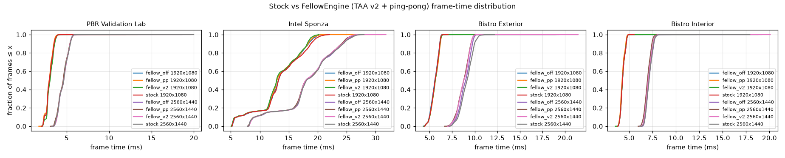
Immutable stock baseline (Godot 4.7.2)
| Scene | Res | Build | Runs | Frame ms (CV) | GPU ms | Render CPU ms | p50 | p95 | p99 | Avg FPS | 1% low | Draw calls | Primitives | VRAM MB | Stutters | GPU MHz / °C |
|---|---|---|---|---|---|---|---|---|---|---|---|---|---|---|---|---|
| PBR Validation Lab | 1920x1080 | stock | 3 | 2.957 (1.2%) | 2.530 | 0.229 | 2.943 | 3.570 | 3.748 | 338.2 | 251.7 | 235 | 0.43 M | 304 | 3 | 1791 / 71 |
| PBR Validation Lab | 2560x1440 | stock | 3 | 4.580 (0.8%) | 4.188 | 0.233 | 4.602 | 5.553 | 5.766 | 218.3 | 166.1 | 235 | 0.43 M | 426 | 2 | 1768 / 70 |
| Intel Sponza | 1920x1080 | stock | 3 | 13.712 (0.9%) | 13.321 | 0.628 | 13.531 | 19.916 | 20.785 | 72.9 | 47.7 | 1104 | 27.02 M | 2533 | 0 | 1748 / 70 |
| Intel Sponza | 2560x1440 | stock | 3 | 18.315 (0.1%) | 17.889 | 0.648 | 18.422 | 25.275 | 26.352 | 54.6 | 37.5 | 1104 | 29.26 M | 2708 | 0 | 1753 / 71 |
| Bistro Exterior | 1920x1080 | stock | 3 | 5.962 (1.8%) | 5.579 | 1.433 | 5.993 | 6.692 | 6.849 | 167.8 | 144.0 | 2983 | 4.60 M | 2109 | 0 | 1718 / 70 |
| Bistro Exterior | 2560x1440 | stock | 3 | 9.139 (1.5%) | 8.709 | 1.575 | 9.200 | 10.215 | 10.462 | 109.4 | 93.5 | 2983 | 4.83 M | 2285 | 1 | 1691 / 71 |
| Bistro Interior | 1920x1080 | stock | 3 | 4.529 (1.2%) | 4.161 | 0.587 | 4.508 | 4.997 | 5.200 | 220.8 | 188.1 | 619 | 0.19 M | 1272 | 0 | 1775 / 71 |
| Bistro Interior | 2560x1440 | stock | 3 | 7.379 (0.0%) | 6.968 | 0.660 | 7.328 | 8.009 | 8.249 | 135.5 | 118.9 | 619 | 0.21 M | 1448 | 0 | 1743 / 72 |
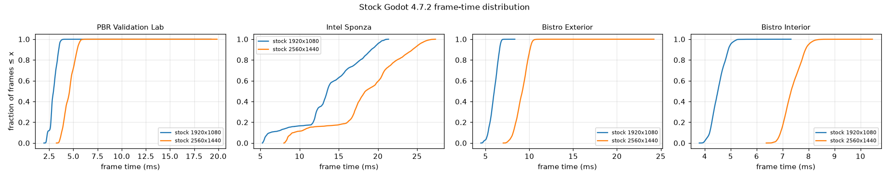
Per-pass GPU timings
Profile runs with engine timestamps enabled (timestamps serialize the render graph; totals are therefore slightly higher than normal runs).
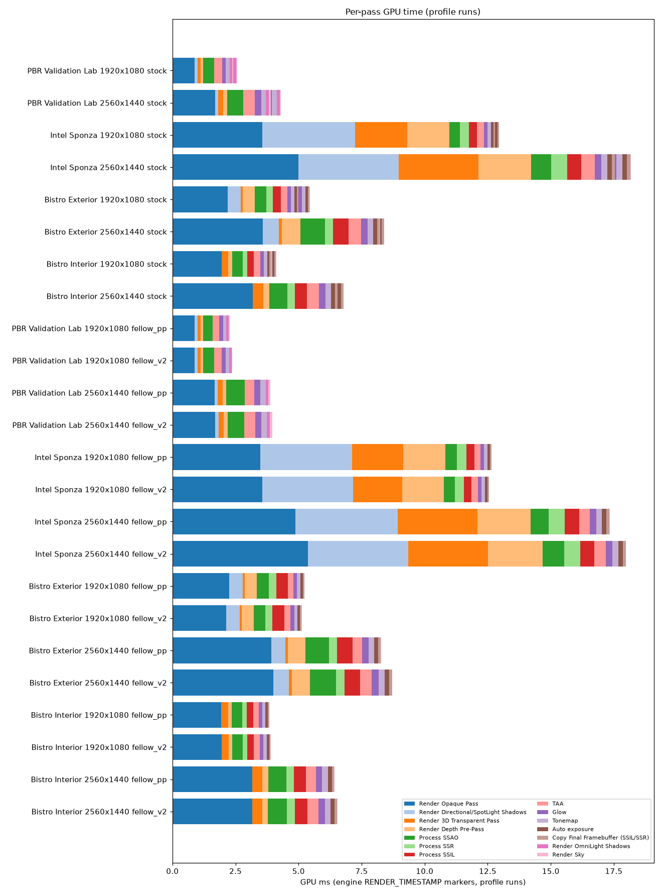
Hardware & configuration
| CPU | Intel(R) Core(TM) Ultra 9 275HX |
| GPU | NVIDIA GeForce RTX 5070 Ti Laptop GPU (12227 MiB, driver 617.14, power limit [N/A] W) |
| OS | {"Caption":"Microsoft Windows 11 Home","Version":"10.0.26200","BuildNumber":"26200"} |
| Display | [{"Name":"Intel(R) Graphics","DriverVersion":"32.0.101.6629","CurrentHorizontalResolution":2560,"CurrentVerticalResolution":1600,"CurrentRefreshRate":240},{"Name":"NVIDIA GeForce RTX 5070 Ti Laptop GPU","DriverVersion":"32.0.16.1714","CurrentHorizontalResolution":null,"CurrentVerticalResolution":null,"CurrentRefreshRate":null}] |
| Power | {"Battery":{"PowerOnline":true,"Charging":false},"Scheme":"Power Scheme GUID: 3b79c5ed-2baa-4957-a015-c958d3221bfc (Acer)"} |
| Engine commit | 4.7.2-stable-15-ge2a897c6b4 on HEAD |
| Compiler | {"visual_studio": "16.11.60", "msvc_toolsets": ["14.29.30133"]} |
| Build flags | platform=windows target=template_release production=yes disable_path_overrides=no winrt=no accesskit=no d3d12=no (MSVC, see BUILDING_FELLOWENGINE.md) |
Full hardware record: hardware.json · every applied renderer setting: settings.json · raw numbers: performance.csv, performance.json
Fluid Lab (FellowEngine GPU shallow water)
Simulation and surface-generation GPU times come from RenderingDevice timestamps inside the module; the viewport GPU time excludes them. Water rendering cost = viewport GPU time with water visible − with water hidden (simulation running in both).
| Grid | Water drawn | Res | Sim GPU ms | Surface GPU ms | Viewport GPU ms | Frame ms | Sim VRAM MB | Runs |
|---|---|---|---|---|---|---|---|---|
| ?² | no | 1920x1080 | – | – | – | – | 0.0 | 0 |
| 256² | yes | 1920x1080 | 0.071 | 0.005 | 2.528 | 2.961 | 3.8 | 6 |
| 256² | no | 1920x1080 | 0.070 | 0.005 | 1.668 | 2.291 | 3.8 | 6 |
| 512² | yes | 1920x1080 | 0.206 | 0.014 | 2.775 | 3.354 | 15.0 | 6 |
| 512² | no | 1920x1080 | 0.205 | 0.014 | 1.730 | 2.518 | 15.0 | 6 |
| 1024² | yes | 1920x1080 | 0.744 | 0.048 | 3.012 | 4.170 | 60.0 | 6 |
| 1024² | no | 1920x1080 | 0.712 | 0.046 | 1.914 | 3.018 | 60.0 | 6 |
| ?² | no | 2560x1440 | – | – | – | – | 0.0 | 0 |
| 256² | yes | 2560x1440 | 0.074 | 0.006 | 4.138 | 4.619 | 3.8 | 4 |
| 256² | no | 2560x1440 | 0.072 | 0.005 | 3.050 | 3.521 | 3.8 | 4 |
| 512² | yes | 2560x1440 | 0.216 | 0.015 | 4.414 | 5.050 | 15.0 | 4 |
| 512² | no | 2560x1440 | 0.211 | 0.015 | 3.079 | 3.696 | 15.0 | 4 |
| 1024² | yes | 2560x1440 | 0.790 | 0.049 | 4.584 | 5.835 | 60.0 | 4 |
| 1024² | no | 2560x1440 | 0.739 | 0.047 | 3.007 | 4.182 | 60.0 | 4 |


Fluid Lab fixed cameras (FellowEngine only; stock Godot cannot run this scene).
Temporal stability (sequences vs accumulated ground truth)
Lower is better for all error columns. Errors are mean absolute luma differences (0..1 display scale).
bistro_ext_path
| build | error in motion regions | error static | flicker vs GT | PSNR | SSIM |
|---|---|---|---|---|---|
| stock | 0.0193 | 0.0073 | 0.0218 | 28.8632 | 0.8998 |
| fellow_v2 | 0.0178 | 0.0076 | 0.0202 | 30.3559 | 0.9202 |
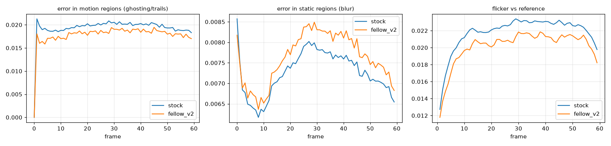

stock | fellow | ground truth | stock error | fellow error
bistro_int_path
| build | error in motion regions | error static | flicker vs GT | PSNR | SSIM |
|---|---|---|---|---|---|
| stock | 0.0091 | 0.0046 | 0.0092 | 35.6047 | 0.9641 |
| fellow_v2 | 0.0085 | 0.0047 | 0.0085 | 36.8704 | 0.9678 |
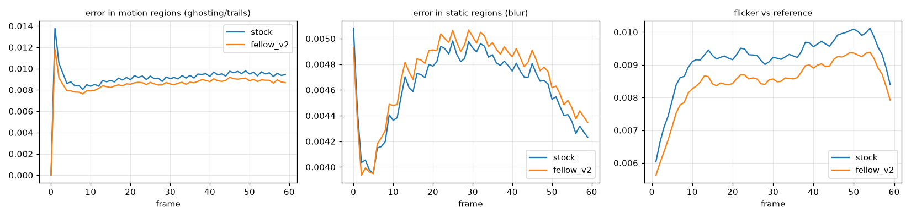

stock | fellow | ground truth | stock error | fellow error
camera_pan
| build | error in motion regions | error static | flicker vs GT | PSNR | SSIM |
|---|---|---|---|---|---|
| stock | 0.0081 | 0.0009 | 0.0065 | 36.1079 | 0.9749 |
| fellow_v2 | 0.0066 | 0.0007 | 0.0052 | 37.9516 | 0.9838 |
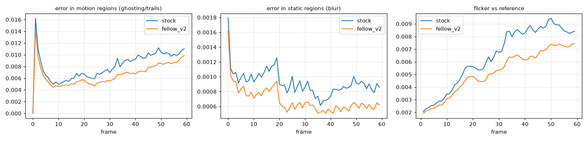

stock | fellow | ground truth | stock error | fellow error
foliage_strafe
| build | error in motion regions | error static | flicker vs GT | PSNR | SSIM |
|---|---|---|---|---|---|
| stock | 0.0143 | 0.0019 | 0.0127 | 31.4997 | 0.9391 |
| fellow_v2 | 0.0151 | 0.0017 | 0.0134 | 31.1057 | 0.9414 |
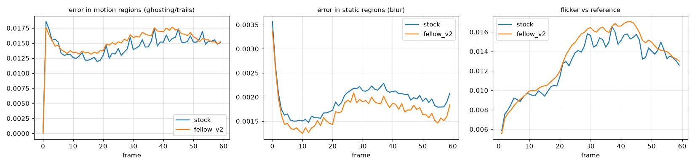

stock | fellow | ground truth | stock error | fellow error
moving_object
| build | error in motion regions | error static | flicker vs GT | PSNR | SSIM |
|---|---|---|---|---|---|
| stock | 0.0097 | 0.0028 | 0.0006 | 37.7160 | 0.9813 |
| fellow_v2 | 0.0083 | 0.0027 | 0.0007 | 38.4010 | 0.9849 |
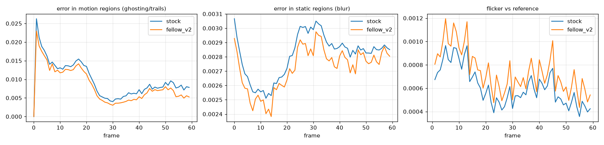

stock | fellow | ground truth | stock error | fellow error
specular_orbit
| build | error in motion regions | error static | flicker vs GT | PSNR | SSIM |
|---|---|---|---|---|---|
| stock | 0.0245 | 0.0026 | 0.0103 | 31.6153 | 0.9598 |
| fellow_v2 | 0.0242 | 0.0026 | 0.0100 | 31.9329 | 0.9619 |
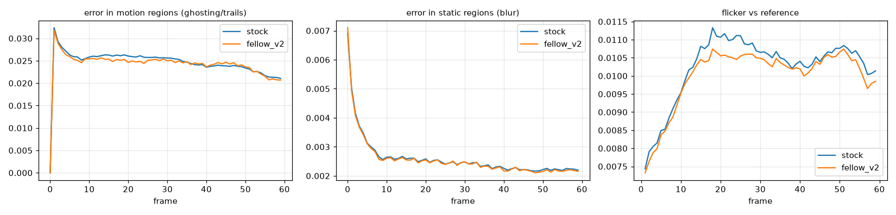

stock | fellow | ground truth | stock error | fellow error
sponza_pan
| build | error in motion regions | error static | flicker vs GT | PSNR | SSIM |
|---|---|---|---|---|---|
| stock | 0.0079 | 0.0067 | 0.0107 | 38.4936 | 0.9437 |
| fellow_v2 | 0.0070 | 0.0063 | 0.0091 | 39.5852 | 0.9609 |
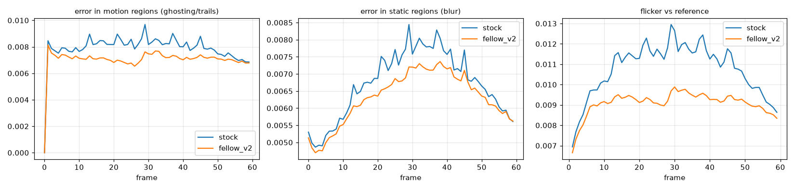

stock | fellow | ground truth | stock error | fellow error
thin_dolly
| build | error in motion regions | error static | flicker vs GT | PSNR | SSIM |
|---|---|---|---|---|---|
| stock | 0.0213 | 0.0013 | 0.0084 | 32.0931 | 0.9513 |
| fellow_v2 | 0.0175 | 0.0013 | 0.0066 | 33.7981 | 0.9675 |
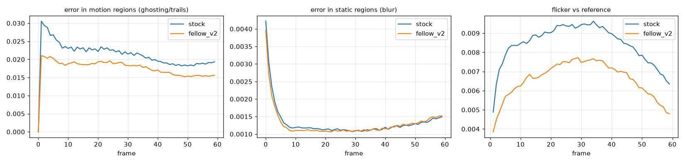

stock | fellow | ground truth | stock error | fellow error
Visual comparison (1920x1080)
Drag the slider: left = FellowEngine, right = Godot stock. Diff heatmaps show |stock − fellow| luma ×4 (black = identical). PNG captures are lossless; shown downscaled. Metrics against the ground truth use a second capture with auto exposure frozen (fellow-m1_capture_gt), because the ground truth is rendered with auto exposure off; the images shown use normal auto exposure.
PBR Validation Lab vs Cycles path-traced reference
Reference lighting variant (uniform sky + sun only). Expected, non-bug differences: Cycles has multi-bounce GI and emissive light transport; Godot's preset uses only sky ambient + SSAO. See benchmarks/reference/pbr_lab_cycles.py.
pbr_dark_room Godot stock (linear EXR, pre-tonemap) vs Cycles, same ACES-fit display transform


| PSNR / SSIM | 16.75 dB / 0.9022 |
| median luminance ratio Godot/Cycles | 1.042 |
pbr_emissive Godot stock (linear EXR, pre-tonemap) vs Cycles, same ACES-fit display transform


| PSNR / SSIM | 23.58 dB / 0.9639 |
| median luminance ratio Godot/Cycles | 0.978 |
pbr_grazing Godot stock (linear EXR, pre-tonemap) vs Cycles, same ACES-fit display transform


| PSNR / SSIM | 18.42 dB / 0.9197 |
| median luminance ratio Godot/Cycles | 0.999 |
pbr_overview Godot stock (linear EXR, pre-tonemap) vs Cycles, same ACES-fit display transform


| PSNR / SSIM | 18.27 dB / 0.8913 |
| median luminance ratio Godot/Cycles | 0.999 |
pbr_specular Godot stock (linear EXR, pre-tonemap) vs Cycles, same ACES-fit display transform


| PSNR / SSIM | 16.74 dB / 0.8005 |
| median luminance ratio Godot/Cycles | 1.023 |
pbr_spheres Godot stock (linear EXR, pre-tonemap) vs Cycles, same ACES-fit display transform


| PSNR / SSIM | 24.71 dB / 0.9524 |
| median luminance ratio Godot/Cycles | 1.020 |
pbr_thin Godot stock (linear EXR, pre-tonemap) vs Cycles, same ACES-fit display transform


| PSNR / SSIM | 17.45 dB / 0.7693 |
| median luminance ratio Godot/Cycles | 0.999 |
PBR Validation Lab
pbr_dark_room


| stock vs fellow PSNR / SSIM | 49.47 dB / 0.9987 / LPIPS 0.0027 |
| stock vs ref PSNR / SSIM | 44.35 dB / 0.9974 / LPIPS 0.0087 |
| fellow vs ref PSNR / SSIM | 44.82 dB / 0.9984 / LPIPS 0.0048 |
pbr_emissive


| stock vs fellow PSNR / SSIM | 54.45 dB / 0.9991 / LPIPS 0.0011 |
| stock vs ref PSNR / SSIM | 39.13 dB / 0.9976 / LPIPS 0.0070 |
| fellow vs ref PSNR / SSIM | 39.37 dB / 0.9973 / LPIPS 0.0061 |
pbr_grazing


| stock vs fellow PSNR / SSIM | 46.31 dB / 0.9976 / LPIPS 0.0046 |
| stock vs ref PSNR / SSIM | 39.11 dB / 0.9894 / LPIPS 0.0162 |
| fellow vs ref PSNR / SSIM | 39.77 dB / 0.9912 / LPIPS 0.0110 |
pbr_overview


| stock vs fellow PSNR / SSIM | 45.21 dB / 0.9962 / LPIPS 0.0107 |
| stock vs ref PSNR / SSIM | 37.64 dB / 0.9861 / LPIPS 0.0265 |
| fellow vs ref PSNR / SSIM | 38.26 dB / 0.9886 / LPIPS 0.0160 |
pbr_specular


| stock vs fellow PSNR / SSIM | 47.85 dB / 0.9985 / LPIPS 0.0017 |
| stock vs ref PSNR / SSIM | 34.21 dB / 0.9701 / LPIPS 0.0485 |
| fellow vs ref PSNR / SSIM | 34.03 dB / 0.9692 / LPIPS 0.0499 |
pbr_spheres


| stock vs fellow PSNR / SSIM | 47.00 dB / 0.9960 / LPIPS 0.0143 |
| stock vs ref PSNR / SSIM | 39.10 dB / 0.9835 / LPIPS 0.0448 |
| fellow vs ref PSNR / SSIM | 39.58 dB / 0.9883 / LPIPS 0.0260 |
pbr_thin


| stock vs fellow PSNR / SSIM | 44.79 dB / 0.9950 / LPIPS 0.0188 |
| stock vs ref PSNR / SSIM | 37.38 dB / 0.9781 / LPIPS 0.0508 |
| fellow vs ref PSNR / SSIM | 37.82 dB / 0.9834 / LPIPS 0.0396 |
Intel Sponza
sponza_cam_01


| stock vs fellow PSNR / SSIM | 44.96 dB / 0.9954 / LPIPS 0.0048 |
| stock vs ref PSNR / SSIM | 40.61 dB / 0.9803 / LPIPS 0.0279 |
| fellow vs ref PSNR / SSIM | 40.99 dB / 0.9825 / LPIPS 0.0217 |
sponza_cam_02


| stock vs fellow PSNR / SSIM | 46.30 dB / 0.9968 / LPIPS 0.0039 |
| stock vs ref PSNR / SSIM | 38.92 dB / 0.9819 / LPIPS 0.0272 |
| fellow vs ref PSNR / SSIM | 39.42 dB / 0.9840 / LPIPS 0.0210 |
sponza_cam_03


| stock vs fellow PSNR / SSIM | 47.20 dB / 0.9965 / LPIPS 0.0041 |
| stock vs ref PSNR / SSIM | 42.69 dB / 0.9820 / LPIPS 0.0271 |
| fellow vs ref PSNR / SSIM | 42.96 dB / 0.9839 / LPIPS 0.0208 |
sponza_cam_04


| stock vs fellow PSNR / SSIM | 48.48 dB / 0.9979 / LPIPS 0.0024 |
| stock vs ref PSNR / SSIM | 42.37 dB / 0.9880 / LPIPS 0.0262 |
| fellow vs ref PSNR / SSIM | 42.79 dB / 0.9892 / LPIPS 0.0220 |
sponza_cam_05


| stock vs fellow PSNR / SSIM | 45.64 dB / 0.9955 / LPIPS 0.0060 |
| stock vs ref PSNR / SSIM | 40.79 dB / 0.9798 / LPIPS 0.0324 |
| fellow vs ref PSNR / SSIM | 41.18 dB / 0.9821 / LPIPS 0.0237 |
sponza_cam_06


| stock vs fellow PSNR / SSIM | 47.54 dB / 0.9972 / LPIPS 0.0035 |
| stock vs ref PSNR / SSIM | 38.72 dB / 0.9804 / LPIPS 0.0278 |
| fellow vs ref PSNR / SSIM | 39.01 dB / 0.9825 / LPIPS 0.0219 |
Bistro Exterior
bistro_ext_cam_01


| stock vs fellow PSNR / SSIM | 41.31 dB / 0.9932 / LPIPS 0.0061 |
| stock vs ref PSNR / SSIM | 33.70 dB / 0.9630 / LPIPS 0.0361 |
| fellow vs ref PSNR / SSIM | 33.94 dB / 0.9666 / LPIPS 0.0285 |
bistro_ext_cam_02


| stock vs fellow PSNR / SSIM | 42.15 dB / 0.9950 / LPIPS 0.0045 |
| stock vs ref PSNR / SSIM | 34.46 dB / 0.9741 / LPIPS 0.0293 |
| fellow vs ref PSNR / SSIM | 34.70 dB / 0.9769 / LPIPS 0.0231 |
bistro_ext_cam_03


| stock vs fellow PSNR / SSIM | 41.49 dB / 0.9951 / LPIPS 0.0047 |
| stock vs ref PSNR / SSIM | 34.46 dB / 0.9724 / LPIPS 0.0271 |
| fellow vs ref PSNR / SSIM | 35.12 dB / 0.9767 / LPIPS 0.0199 |
bistro_ext_cam_04


| stock vs fellow PSNR / SSIM | 41.93 dB / 0.9951 / LPIPS 0.0048 |
| stock vs ref PSNR / SSIM | 34.86 dB / 0.9780 / LPIPS 0.0358 |
| fellow vs ref PSNR / SSIM | 34.64 dB / 0.9802 / LPIPS 0.0291 |
Bistro Interior
bistro_int_cam_01


| stock vs fellow PSNR / SSIM | 43.83 dB / 0.9965 / LPIPS 0.0033 |
| stock vs ref PSNR / SSIM | 32.21 dB / 0.9809 / LPIPS 0.0264 |
| fellow vs ref PSNR / SSIM | 32.48 dB / 0.9829 / LPIPS 0.0215 |
bistro_int_cam_02


| stock vs fellow PSNR / SSIM | 49.63 dB / 0.9981 / LPIPS 0.0021 |
| stock vs ref PSNR / SSIM | 38.18 dB / 0.9844 / LPIPS 0.0242 |
| fellow vs ref PSNR / SSIM | 38.35 dB / 0.9860 / LPIPS 0.0197 |
bistro_int_cam_03


| stock vs fellow PSNR / SSIM | 51.20 dB / 0.9984 / LPIPS 0.0020 |
| stock vs ref PSNR / SSIM | 44.64 dB / 0.9924 / LPIPS 0.0138 |
| fellow vs ref PSNR / SSIM | 44.90 dB / 0.9931 / LPIPS 0.0110 |
bistro_int_cam_04


| stock vs fellow PSNR / SSIM | 48.93 dB / 0.9979 / LPIPS 0.0022 |
| stock vs ref PSNR / SSIM | 37.88 dB / 0.9863 / LPIPS 0.0211 |
| fellow vs ref PSNR / SSIM | 38.18 dB / 0.9879 / LPIPS 0.0170 |